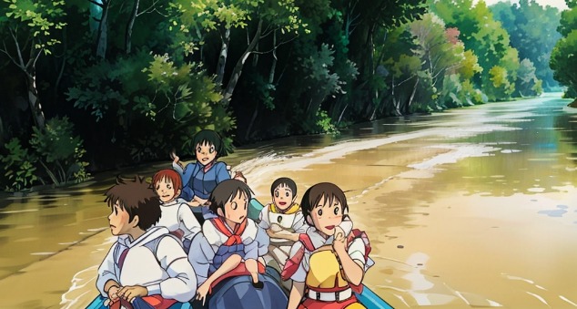
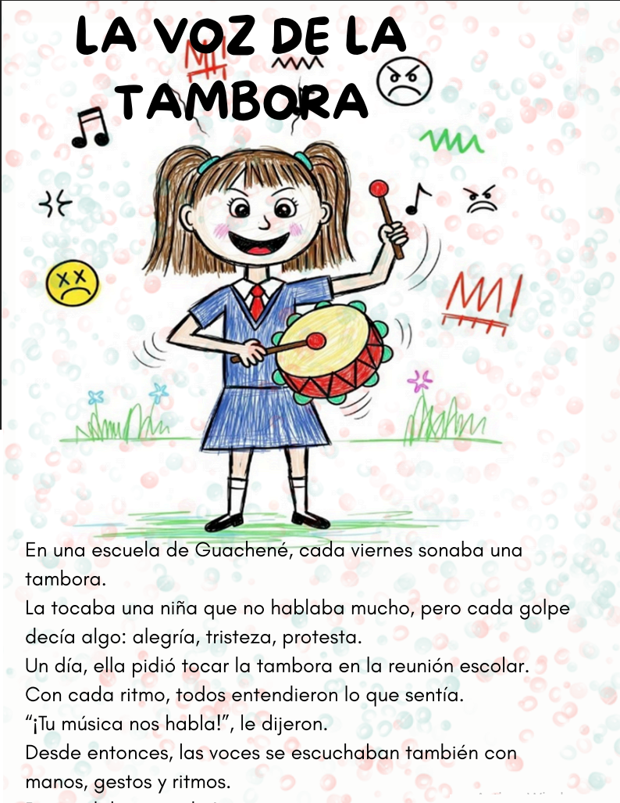
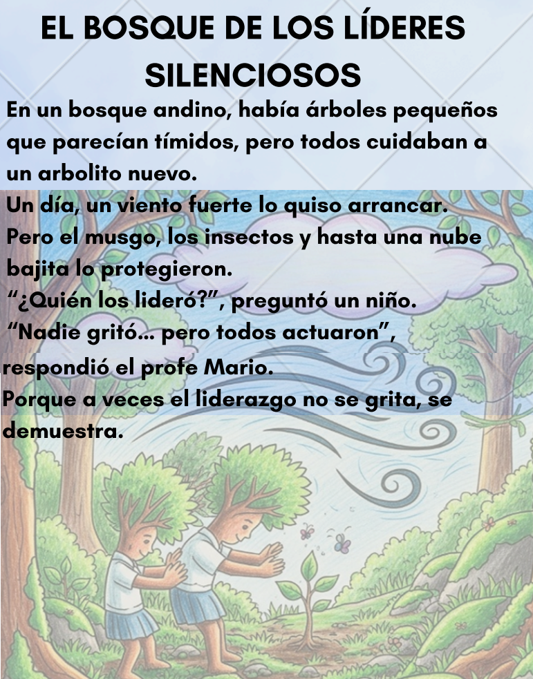
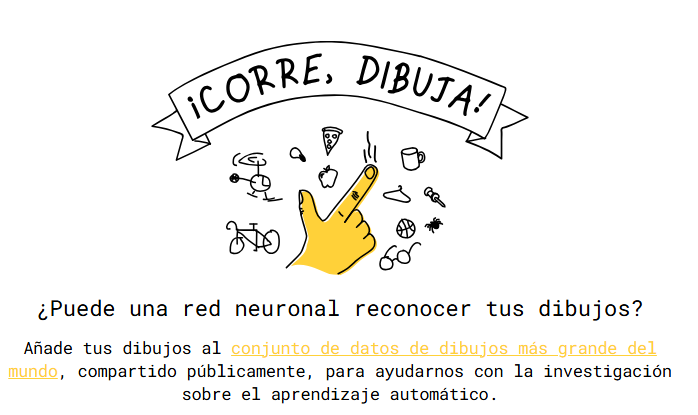
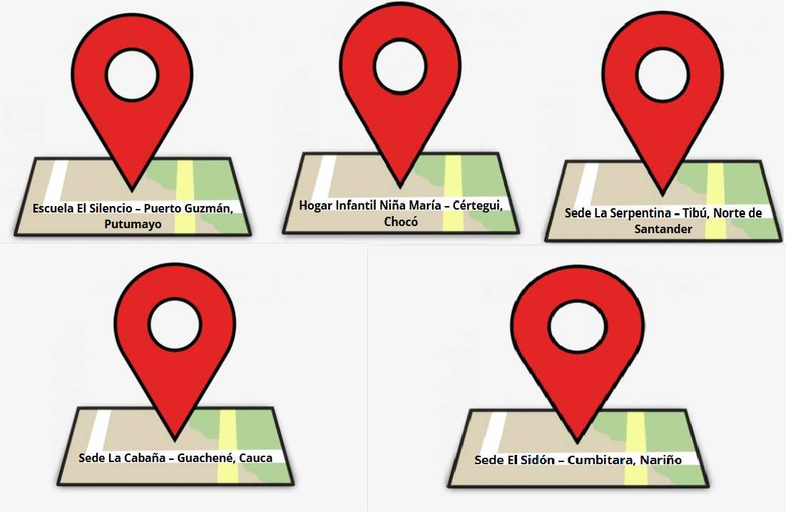

<!DOCTYPE html>
<html lang="es">
<head>
    <meta charset="UTF-8">
    <meta name="viewport" content="width=device-width, initial-scale=1.0">
    <title>voces de mi tierra</title>
    <style> 
        /* Estilos para el cuerpo (body) de la página */
        body {
            /* --- Propiedades para la imagen de fondo --- */
            background-image: url('6.jpg'); /* ¡IMPORTANTE: Asegúrate de que '6.jpg' esté en la misma carpeta! */
            background-size: cover;          /* La imagen cubrirá todo el fondo, recortando si es necesario */
            background-repeat: no-repeat;    /* Evita que la imagen se repita */
            background-attachment: fixed;    /* La imagen de fondo permanecerá fija al hacer scroll */
            background-position: center center; /* Centra la imagen en el fondo */
            background-color: #e0e0e0;       /* Color de fondo de respaldo si la imagen no carga */
            /* --- Fin de propiedades de la imagen de fondo --- */

            margin: 0;                       /* Elimina el margen predeterminado del body */
            padding: 0;                      /* Elimina el relleno predeterminado del body */
            font-family: Arial, sans-serif;  /* Fuente de texto general */
            color: #333;                     /* Color de texto general */
            min-height: 100vh;               /* Asegura que el body ocupe al menos el 100% del alto de la ventana */
        }

        /* Estilos para el contenido de tu página */
        .contenido-principal {
            max-width: 960px; /* Ancho máximo para tu contenido */
            margin: 50px auto; /* Centra el contenido y le da un margen superior/inferior */
            padding: 30px;
            background-color: rgba(255, 255, 255, 0.85); /* Fondo blanco semi-transparente para la legibilidad */
            border-radius: 10px;
            box-shadow: 0 4px 8px rgba(0, 0, 0, 0.1);
        }

        h1 {
            color: #0056b3;
            text-align: center;
        }

        p {
            line-height: 1.6;
        }
    </style>
</head>
<body>

   
    </body>
</html>
<!DOCTYPE html>
<html lang="es">
    
  <head>
     
    <meta charset="UTF-8">
        <meta name="viewport" content="width=device-width, initial-scale=1.0">
        
        <title>Voces de mi Tierra: Liderazgo y Autonomía Infantil</title>    
         
        <meta name="description" content="Proyecto pedagógico para fortalecer el liderazgo y la autonomía infantil a través de relatos orales, saberes familiares y herramientas digitales interactivas.">
    <meta name="keywords" content="educación, liderazgo infantil, autonomía, relatos orales, saberes familiares, cuentos, tecnología educativa, Google Sites, Wordwall, Vocaroo, educación infantil">
    <meta name="author" content="Grupo de Estudiantes de Licenciatura en Educación">
    
        <link href="https://fonts.googleapis.com/css2?family=Comic+Neue:wght@400;700&family=Poppins:wght@400;600&display=swap" rel="stylesheet">
          
         


    <style>
       
        body {
            font-family: 'Poppins', sans-serif;
            line-height: 1.6;
            margin: 0;
            padding: 20px;
            background-color: #f4f7f6;
            color: #333;
        }

        header {
            background-color: #79c7c2;
            color: white;
            padding: 20px 0;
            text-align: center;
            border-radius: 8px;
            margin-bottom: 30px;
        }

        header h1 {
            font-family: 'Comic Neue', cursive;
            margin: 0;
            font-size: 2.5em;
        }

        header p {
            font-size: 1.1em;
        }

        nav {
            background-color: #5bb0a8;
            padding: 10px 0;
            border-radius: 8px;
            margin-bottom: 30px;
            text-align: center;
        }

        nav ul {
            list-style: none;
            padding: 0;
            margin: 0;
            display: flex;
            justify-content: center;
            flex-wrap: wrap; /* Permite que los elementos se envuelvan en pantallas pequeñas */
        }

        nav ul li {
            margin: 0 15px;
        }

        nav ul li a {
            color: white;
            text-decoration: none;
            font-weight: bold;
            padding: 8px 15px;
            border-radius: 5px;
            transition: background-color 0.3s ease;
        }

        nav ul li a:hover {
            background-color: #4a9089;
        }

        .container {
            max-width: 1200px;
            margin: auto;
            padding: 0 15px;
        }

        section {
            background-color: white;
            padding: 30px;
            margin-bottom: 30px;
            border-radius: 8px;
            box-shadow: 0 2px 5px rgba(0, 0, 0, 0.1);
        }

        section h2 {
            color: #3d7e77;
            border-bottom: 2px solid #79c7c2;
            padding-bottom: 10px;
            margin-bottom: 20px;
            font-family: 'Comic Neue', cursive;
        }

        .card-grid {
            display: grid;
            grid-template-columns: repeat(auto-fit, minmax(280px, 1fr));
            gap: 25px;
        }

        .card {
            background-color: #e9f5f5;
            padding: 20px;
            border-radius: 8px;
            box-shadow: 0 1px 3px rgba(0, 0, 0, 0.08);
            text-align: center;
            transition: transform 0.2s ease;
        }

        .card:hover {
            transform: translateY(-5px);
        }

        .card img {
            max-width: 100%;
            height: auto;
            border-radius: 5px;
            margin-bottom: 15px;
        }

        .card h3 {
            color: #3d7e77;
            margin-top: 0;
        }

        .card .btn {
            display: inline-block;
            background-color: #5bb0a8;
            color: white;
            padding: 10px 20px;
            border-radius: 5px;
            text-decoration: none;
            margin-top: 15px;
            transition: background-color 0.3s ease;
        }

        .card .btn:hover {
            background-color: #4a9089;
        }

        .audio-player {
            width: 100%;
            margin-top: 15px;
        }

        footer {
            text-align: center;
            padding: 20px;
            color: #666;
            font-size: 0.9em;
            margin-top: 30px;
            border-top: 1px solid #ddd;
        }

        /* Responsive adjustments */
        @media (max-width: 768px) {
            nav ul {
                flex-direction: column;
            }
            nav ul li {
                margin: 5px 0;
            }
            header h1 {
                font-size: 2em;
            }
        }
    </style>
</head>

<body>
    <header>
        <div class="container">
            <h1>VOCES DE MI TIERRA</h1>
            <p>Fortaleciendo el Liderazgo y la Autonomía Infantil a Través de Relatos Orales y Saberes Familiares</p>
        </div>
    </header>

    <nav>
        <div class="container">
            <ul>
                <li><a href="#inicio">Inicio</a></li>
                <li><a href="#relatos">Relatos por Vereda o Tema</a></li>
                <li><a href="#galeria-videos">Galería de Videos</a></li>
                <li><a href="#juegos">Juega y arma</a></li>
                <li><a href="#dibujos">Dibujos de Niños</a></li>
                <li><a href="#tu-voz-importa">Tu Voz Importa</a></li>
            </ul>
        </div>
    </nav>

    <main class="container">
        <section id="inicio">
            <h2>✨ Inicio</h2>
            <p>¡Bienvenidos a "Voces de mi Tierra"! Este es un espacio donde la imaginación de los niños cobra vida a través de sus propias narraciones, saberes ancestrales y la magia de la tecnología.</p>
            <p>Aquí, cada cuento, cada dibujo y cada juego es una oportunidad para que los niños y niñas desarrollen su voz, fortalezcan su liderazgo y descubran el poder de sus propias historias. ¡Prepárense para escuchar, aprender y jugar!</p>
            <audio controls class="audio-player">
                <source src="1.mp3" type="audio/mpeg">
                Tu navegador no soporta el elemento de audio.
            </audio>
            <p><i>Escucha la voz de nuestros pequeños narradores dándote la bienvenida.</i></p>
        </section>

        <section id="relatos">
            <h2>📖 Relatos por Vereda o Tema</h2>
            <p>Explora los fascinantes cuentos, mitos y leyendas que nuestros niños han recopilado y narrado, ilustrados con sus propios dibujos.</p>
            <div class="card-grid">
                <div class="card">
                    <h3>El Secreto del Río Caquetá</h3>
                    
                    <audio controls class="audio-player">
                        <source src="riocaqueta.ogg" type="audio/mpeg">
                        Tu navegador no soporta el elemento de audio.
                    </audio>
                    <a href="https://wordwall.net/es/resource/94847890" target="_blank" class="btn">¡Juega con este cuento!</a>
                </div>
                <div class="card">
                    <h3>LA RANA Y EL TAMBOR MAGICO</h3>
                     </head>
<body>

  <!DOCTYPE html>
<html lang="es">
<head>
    <meta charset="UTF-8">
    <meta name="viewport" content="width=device-width, initial-scale=1.0">
    <title>Video de la Rana - Autoplay</title>
    <style>
        body {
            font-family: 'Inter', sans-serif; /* Usando Inter como fuente */
            display: flex;
            flex-direction: column;
            justify-content: center;
            align-items: center;
            min-height: 100vh;
            background-color: #e0ffe0; /* Un verde muy claro */
            margin: 0;
            padding: 20px;
            box-sizing: border-box;
        }
        h1 {
            color: #228b22; /* Verde bosque */
            margin-bottom: 30px;
            font-size: 2.5rem; /* Tamaño de fuente más grande */
            text-align: center;
        }
        video {
            max-width: 90%; /* Asegura que el video no se salga de la pantalla en dispositivos pequeños */
            height: auto; /* Mantiene la proporción del video */
            border-radius: 16px; /* Bordes más redondeados */
            box-shadow: 0 10px 20px rgba(0,0,0,0.25); /* Sombra más pronunciada */
            border: 4px solid #32cd32; /* Un borde verde lima */
            transition: transform 0.3s ease-in-out; /* Transición suave para interacción */
        }
        video:hover {
            transform: scale(1.02); /* Ligeramente más grande al pasar el ratón */
        }
        /* Estilos para Tailwind CSS (aunque no se cargue explícitamente aquí, se usan sus convenciones) */
        .container {
            @apply flex flex-col items-center justify-center min-h-screen bg-green-50 p-5;
        }
        .title {
            @apply text-5xl font-extrabold text-green-800 mb-8 text-center;
        }
        .video-wrapper {
            @apply max-w-4xl w-full rounded-2xl shadow-2xl overflow-hidden border-4 border-green-500 transition-transform duration-300 hover:scale-105;
        }
    </style>
    <!-- Carga de Tailwind CSS para clases utilitarias (aunque el estilo principal es personalizado) -->
    <script src="https://cdn.tailwindcss.com"></script>
    <!-- Carga de la fuente Inter desde Google Fonts -->
    <link href="https://fonts.googleapis.com/css2?family=Inter:wght@400;700&display=swap" rel="stylesheet">
</head>
<body>

        <!-- El video con autoplay y muted -->
    <video autoplay loop muted controls poster="rana_thumbnail.jpg">
        <source src="rana.mp4" type="video/mp4">
        Tu navegador no soporta el elemento de video.
    </video>

</body>
</html>
                    
                    <audio controls class="audio-player">
                        <source src="24.mp3" type="audio/mpeg">
                        Tu navegador no soporta el elemento de audio.
                    </audio>
                    <a href="https://wordwall.net/es/resource/94849584" target="_blank" class="btn">¡Pon a prueba tu conocimiento!</a>
                </div>
                </div>
            <p><i>Cada cuento es un viaje. Escúchalos, observa sus dibujos y ¡atrévete a jugar!</i></p>
        </section>

        <section id="galeria-videos">
            <h2>🎬 Galería de Videos</h2>
            <p>¡Adéntrate en el encantador mundo de nuestros video cuentos! Historias cautivadoras, narradas y presentadas por los propios niños.</p>
            <!DOCTYPE html>
<html lang="es">
<head>
    <meta charset="UTF-8">
    <meta name="viewport" content="width=device-width, initial-scale=1.0">
    <title>Video Centrado en Tarjeta</title>
    <style>
        /* Estilos generales para el cuerpo y el contenedor principal */
        body {
            font-family: sans-serif;
            display: flex;
            justify-content: center;
            align-items: center;
            min-height: 100vh; /* Para centrar la cuadrícula en la pantalla */
            margin: 0;
            background-color: #f0f0f0;
        }

        .card-grid {
            display: grid;
            grid-template-columns: repeat(auto-fit, minmax(300px, 1fr)); /* Ejemplo de grid responsivo */
            gap: 20px;
            padding: 20px;
            max-width: 1200px;
            width: 100%;
            box-sizing: border-box; /* Incluye padding y border en el ancho */
        }

        .card {
            background-color: #fff;
            border-radius: 8px;
            box-shadow: 0 4px 8px rgba(0, 0, 0, 0.1);
            padding: 20px;
            text-align: center; /* Centra el texto del h3 */

            /* --- ESTOS SON LOS ESTILOS CLAVE PARA CENTRAR EL VIDEO --- */
            display: flex; /* Convierte la tarjeta en un contenedor flex */
            flex-direction: column; /* Apila los elementos verticalmente */
            justify-content: center; /* Centra los ítems a lo largo del eje principal (vertical aquí) */
            align-items: center; /* Centra los ítems a lo largo del eje transversal (horizontal aquí) */
            /* -------------------------------------------------------- */
        }

        .card h3 {
            margin-top: 0;
            color: #333;
        }

        .card video {
            max-width: 100%; /* Asegura que el video no se desborde del contenedor */
            height: auto; /* Mantiene la proporción del video */
            border-radius: 4px; /* Bordes redondeados para el video */
            display: block; /* Asegura que el video sea un bloque para que align-items funcione */
            /* No necesitas margin: auto; si usas align-items: center en el padre flex */
        }
    </style>
</head>
<body>

    <div class="card-grid">
        <div class="card">
            <h3>CUENTOS PARA SOÑAR</h3>
            <video width="280" height="180" controls> <source src="video1.mp4" type="video/mp4">
                Tu navegador no soporta el elemento de video.
            </video>
        </div>

        <div class="card">
           <h3>HISTORIAS DIVERTIDAS</h3>
<video width="280" height="180" controls>
    <source src="video2.mp4" type="video/mp4">
    Tu navegador no soporta el elemento de video.
</video>
        </div>
    </div>

</body>
</html>
                
        <section id="juegos">
            <h2>🧠 Juega y arma</h2>
            <p>¡Pon a prueba tu ingenio armando rompecabezas y fortalece tus habilidades de liderazgo y toma de decisiones con nuestros juegos interactivos!    </p>
            <div class="card-grid">
                <div class="card">
                    <h3>¡Arma tu Rompecabezas!</h3>
                    
                    <p>¡Observa la imagen y arma este rompecabezas!</p>
                    <a href="https://puzzel.org/es/jigsaw/play?p=-OVGGqkyxbqojy84UkWL" target="_blank" class="btn">¡A Jugar!</a>
                </div>
                <div class="card">
                    <h3>¡Arma tu Rompecabezas!</h3>
                    
                    <p>¡Observa la imagen y arma este rompecabezas!</p>
                    <a href="https://puzzel.org/es/jigsaw/play?p=-OVGKrjOhpmNFWURKBTe" target="_blank" class="btn">¡A Jugar!</a>
                </div>
                </div>
            <p><i>La diversión y el aprendizaje van de la mano. ¡Acepta el desafío!</i></p>
        </section>

        <section id="dibujos">
            <h2>🎨 Dibujos de Niños</h2>
            <p>Quick, Draw! es un mural virtual donde los niños pueden dibujar lo que quieran. Una computadora inteligente intenta adivinar sus dibujos, y al participar, están ayudando en una investigación para que las computadoras aprendan a reconocer dibujos. ¡Anímate a dibujar y sé parte de esta aventura!
</p>
            <div class="card-grid">
                <div class="card">
                    
                   <button style="background-color: rgb(250, 233, 2); color: rgb(255, 248, 248); border: 2px solid yellow; padding: 10px 20px; font-size: 16px; cursor: pointer;" onclick="window.open('https://quickdraw.withgoogle.com/?locale=esA', '_blank')"> A Dibujar</button>
                    
                </div>
                
                    
                
                </div>
            <p><i>¿Tienes un dibujo que compartir? ¡Pronto podrás subirlo!</i></p>
        </section>

        <section id="tu-voz-importa">
            <h2>💬 Tu Voz Importa</h2>
            <p>Este es tu rincón para participar. Queremos escuchar tus ideas, tus reflexiones y lo que piensas sobre nuestras historias. ¡Tu opinión nos ayuda a crecer!</p>
   <!DOCTYPE html>
<html lang="es">
<head>
    <meta charset="UTF-8">
    <meta name="viewport" content="width=device-width, initial-scale=1.0">
    <title>Formulario con Botón Azul</title>
    <style>
        /* Estilos para el botón de enviar */
        button[type="submit"] {
            background-color: #007bff; /* Color de fondo azul */
            color: white; /* Color del texto del botón */
            padding: 10px 20px; /* Espaciado interno (arriba/abajo, izquierda/derecha) */
            border: none; /* Quita el borde por defecto del botón */
            border-radius: 5px; /* Bordes ligeramente redondeados */
            cursor: pointer; /* Cambia el cursor a una mano al pasar por encima */
            font-size: 16px; /* Tamaño de la fuente del texto del botón */
            width: 100%; /* Haz que el botón ocupe todo el ancho disponible */
            box-sizing: border-box; /* Asegura que el padding se incluya en el ancho total */
            transition: background-color 0.3s ease; /* Suaviza el cambio de color al pasar el mouse */
        }

        button[type="submit"]:hover {
            background-color: #0056b3; /* Un azul más oscuro al pasar el mouse */
        }

        /* Estilos opcionales para los campos de texto para que todo se vea mejor */
        input[type="text"],
        input[type="email"],
        input[type="number"],
        textarea {
            width: 100%;
            padding: 8px;
            margin-bottom: 10px;
            border: 1px solid #ccc;
            border-radius: 4px;
            box-sizing: border-box;
        }

        label {
            display: block; /* Hace que cada etiqueta ocupe su propia línea */
            margin-bottom: 5px;
        }
    </style>
</head>
<body>
    <h1>Completa los datos</h1>

    <form action="#" method="POST">
        <label for="nombre">Tu Nombre:</label>
        <input type="text" id="nombre" name="nombre" placeholder="Escribe aquí tu nombre" required>

        <label for="email">Tu Correo Electrónico:</label>
        <input type="email" id="email" name="email" placeholder="ejemplo@dominio.com" required>

        <label for="edad">Tu Edad:</label>
        <input type="number" id="edad" name="edad" min="1" max="120" placeholder="Solo números">

        <label for="mensaje">Tu Mensaje:</label>
        <textarea id="mensaje" name="mensaje" rows="5" cols="40" placeholder="Escribe tu mensaje aquí..."></textarea>

        <button type="submit">Enviar</button>
    </form>
</body>
</html>
 
<p><i>¿Qué harías tú en esa historia?" ¡Cuéntanos!</i></p>
        </section>
    </main>
<!DOCTYPE html>
<html lang="es">
<head>
    <meta charset="UTF-8">
    <meta name="viewport" content="width=device-width, initial-scale=1.0">
    <title>Voces de mi Tierra: Liderazgo y Autonomía Infantil</title>
    <link href="https://fonts.googleapis.com/css2?family=Comic+Neue:wght@400;700&family=Poppins:wght@400;600&display=swap" rel="stylesheet">
    <style>
        /* Otros estilos que ya tengas... */

        /* --- Estilo para el footer --- */
        footer {
            background-color: #333; /* Un fondo oscuro para el footer para que el texto claro resalte */
            color: #f0f0f0; /* ¡Este es el color de letra! Puedes cambiarlo a tu gusto */
            padding: 20px 0; /* Relleno superior e inferior */
            text-align: center; /* Centra el texto */
            margin-top: 50px; /* Espacio encima del footer */
        }

        footer .container {
            /* Si tienes un contenedor dentro del footer y quieres que su texto tenga el mismo color,
               asegúrate de que no sobrescriba el color definido en 'footer'.
               Normalmente, el color se hereda, así que no necesitarías definirlo aquí de nuevo. */
            max-width: 960px; /* Ancho máximo para el contenido del footer */
            margin: 0 auto; /* Centra el contenedor */
        }

        /* Si quieres un color específico solo para los párrafos dentro del footer */
        footer p {
            color: #d0d0d0; /* Un color ligeramente diferente para los párrafos, por ejemplo */
            margin: 5px 0; /* Espacio entre párrafos */
            font-size: 0.9em; /* Tamaño de fuente un poco más pequeño */
        }
    </style>

</html>
    
 <footer>
        <div class="container">
           
            <p>&copy; 2025 Voces de mi Tierra. Proyecto desarrollado por Grupo de Estudiantes de Licenciatura en Educación Infantil</p>
            <p>Hecho con amor y pasión por las voces de nuestros niños.</p>
            <h1>SEDES DEL PROYECTO</h1>
            
        </div>
</footer>

            
            
<html>
